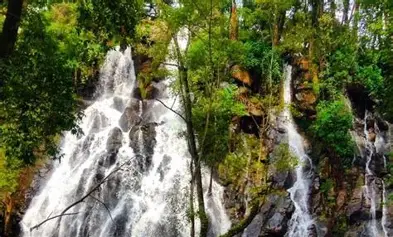
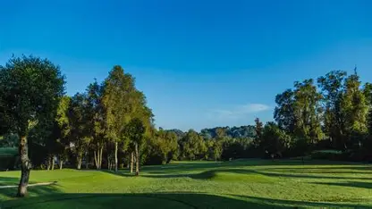
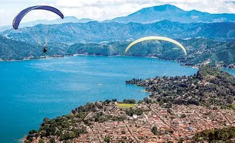
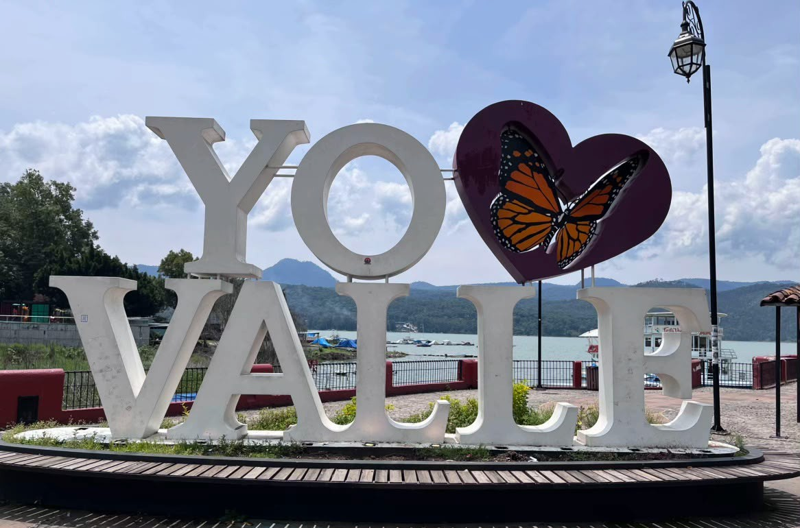
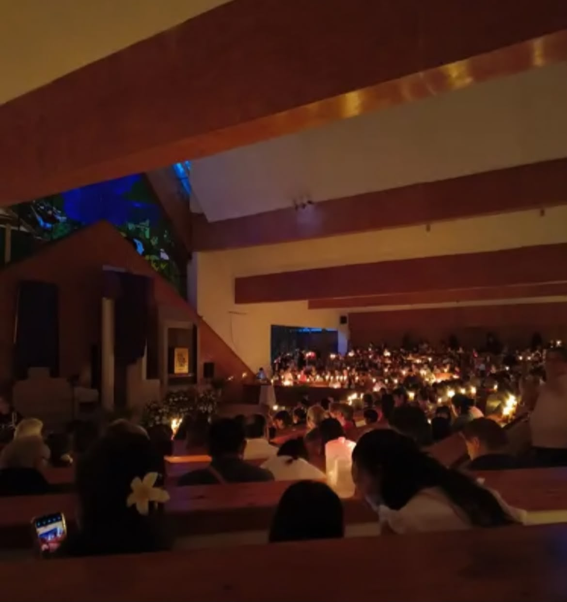
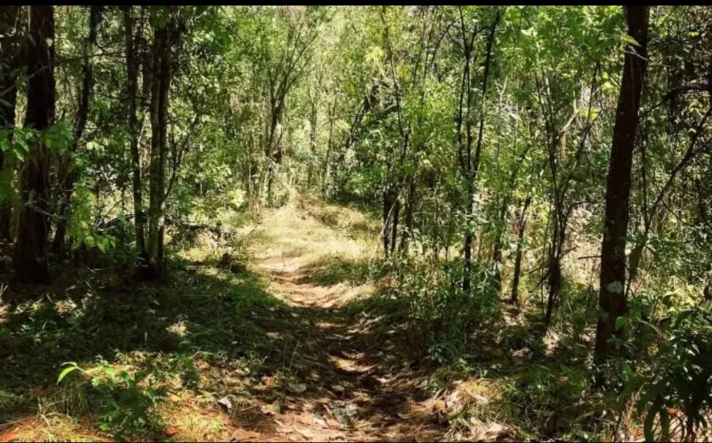
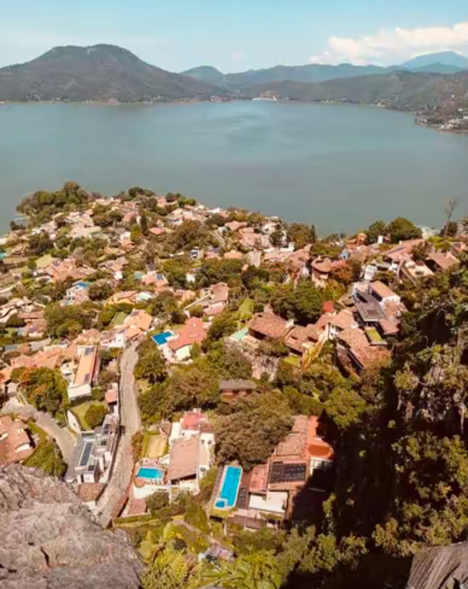
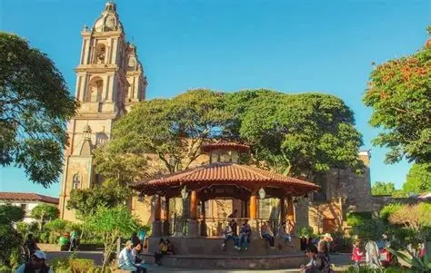

Valle de Bravo, donde la naturaleza, la historia y la tradicion se unen para crear un lugar magico.
Lago de valle de Bravo es uno de los principales atractivos del municipio. En el se realizan actividades como paseo en lancha, kayak y navegacion.
Los bosques, el lago y las cascadas son parte fundamental de la idetidad de Valle de Bravo. Para conservarlos las familias y los visitantes pueden realizar: No tirar basura en las calles, bosques y cuerpos de agua, ahorrar agua y evitar contaminar los rios, plantas y cuidar arboles nativos, respetar los animales y vegetacion, participar en jornadas de limpieza comunitaria.

El Club de Golf Avándaro es un lugar deportivo y recreativo ubicado en Avándaro, dentro del municipio de Valle de Bravo, Estado de México. Se distingue por su campo de golf rodeado de bosques y paisajes naturales, así como por sus instalaciones para convivir y practicar diferentes deportes.
Ubicación
Lugar: Avándaro, Valle de Bravo, Estado de México.

La Zona de Aterrizaje de Parapente es un lugar turístico de Valle de Bravo donde aterrizan los pilotos de parapente y ala delta después de volar sobre el paisaje de la región. Se encuentra cerca del lago, detrás del Templo de Santa María Ahuacatlán.
Ubicación y cómo llegar, Localidad: Santa María Ahuacatlán, Valle de Bravo, Estado de México, Referencia: detrás del Templo de Santa María Ahuacatlán, Acceso: mediante un pequeño pasillo de terracería que conduce hacia la orilla del lago.

La Alameda del Bicentenario es un espacio público ubicado en Valle de Bravo, cerca del lago y del embarcadero municipal. Es un lugar donde las familias y los visitantes pueden caminar, descansar y disfrutar del paisaje.
También funciona como sede de actividades culturales y eventos públicos. Gracias a su ubicación, permite apreciar el ambiente turístico del municipio y disfrutar de las vistas del lago.

La Parroquia de Avándaro es un templo religioso ubicado en la localidad de Avándaro, dentro de Valle de Bravo. Es un espacio dedicado a la vida religiosa de la comunidad, donde las personas pueden reunirse para celebrar misas y otras ceremonias.
Además de su función religiosa, representa un punto de encuentro para las familias y los habitantes de Avándaro. Forma parte de las tradiciones y de la identidad cultural de esta localidad.

Cerro Colorado es una comunidad del municipio de Valle de Bravo, rodeada de paisajes naturales y zonas boscosas. Su entorno permite apreciar la vegetación de la región y la tranquilidad de las comunidades que se encuentran fuera del centro turístico.
Es un lugar representativo de la riqueza natural de Valle de Bravo y de la relación que existe entre sus habitantes y el medio ambiente.

Cuadrilla de Dolores es una comunidad del municipio de Valle de Bravo. Se caracteriza por su ambiente tranquilo, sus áreas verdes y su entorno rural. En sus alrededores se pueden encontrar paisajes naturales, vegetación y espacios deportivos que forman parte de la vida cotidiana de sus habitantes.
Es un lugar donde se puede apreciar la convivencia comunitaria y la naturaleza que caracteriza a esta región.
La Peña es uno de los miradores naturales más conocidos de Valle de Bravo. Desde su parte elevada se puede observar el lago, las montañas y gran parte del pueblo. También tiene importancia histórica, pues la zona cuenta con antecedentes de ocupación prehispánica relacionados con los antiguos habitantes matlatzincas.
Es un sitio ideal para admirar los paisajes, tomar fotografías y conocer la riqueza natural e histórica del municipio.

El quiosco de Valle de Bravo se encuentra en el Jardín Central, en el centro histórico del municipio. Es uno de los lugares más representativos del Pueblo Mágico y un punto de reunión para los habitantes y turistas.
Está rodeado de árboles, jardines, bancas y los tradicionales portales, donde se pueden encontrar tiendas y puestos de comida típica, como esquites y nieves artesanales.
